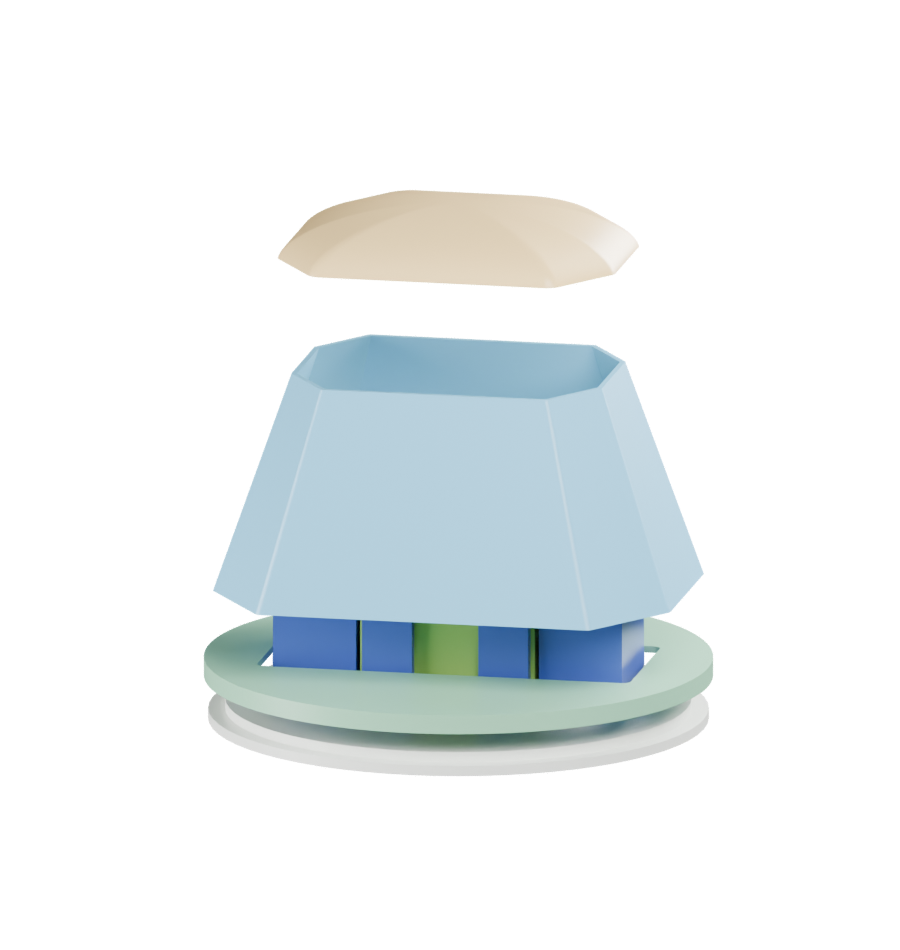
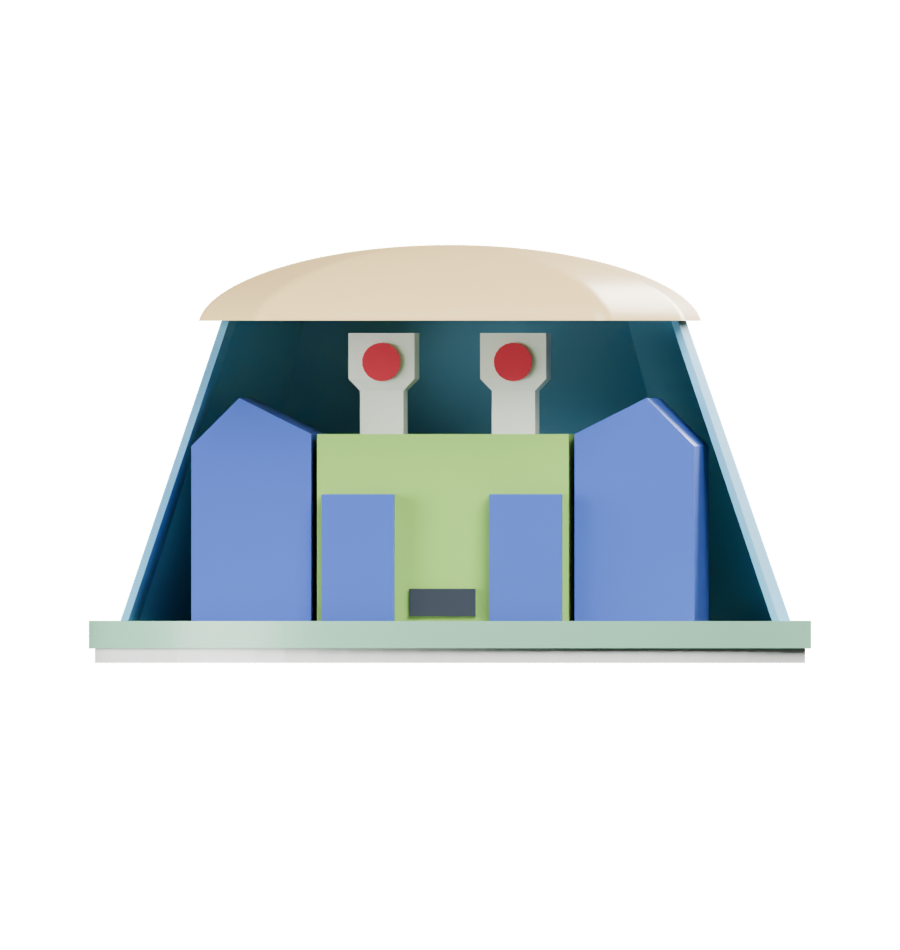
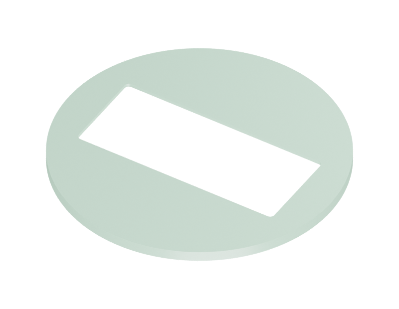

04 / Make your own
Print a Zoomer.
The supplied projects are set up for the Original Prusa XL with five tools and 0.4 mm nozzles. Open each 3MF as a project to load its settings, then slice for the printer and filament you use.
Keep the files at 100% scale and in their saved orientations. The robot is about 180 mm tall, 140.6 mm wide and 59 mm deep. Scaling also changes the joint clearances.
How the printed parts go together
Dry-fit the connections before using adhesive. This exploded view includes the newer faceted cover.

- 1
Tracks into the deck
Glue the two keys on each track into the underside of the deck. The steep track ends face forward. Rest both tracks on a flat surface while the glue cures.
- 2
Column between deck and torso
Glue the column's lower key into the deck and its upper key into the torso. Its flat side faces the back. Support the torso until the adhesive cures.
- 3
Shoulder pins through the arms
Insert each pin from outside the arm, with its flange staying outside. Glue only the innermost 5 mm into the torso socket. Leave the arm free to swing.
- 4
Head onto the peg
Glue the peg into the torso with about 3.5 mm exposed. Leave that exposed section clean. Lower the head onto it and check that it turns and lifts off.
- 5
Add the faceted cover
The adapter sits on the head, the thin shell rests on the adapter, and the cap closes the top. Use the close-ups below to check each connection.
Build the faceted head cover
Blue identifies the thin shell, amber the cap, and green the adapter in these construction renders. All three parts print in clear PETG. These views explain the geometry rather than predict its transparency.



1. Bottom section onto the head
The circular recess faces down and fits around the existing 55 mm head lip. The long opening runs across the face. Keep this connection free of glue if you want the cover to lift off.

2. Shell onto the flat ledge
The adapter's flat face points up. Center the shell on it with a broad flat panel facing forward. It rests on the surface rather than pressing into a socket. Bond only the hidden lower rim with small adhesive dots.

3. Top section onto the shell
Lower the cap's groove onto the shell's narrow upper edge. Align the broad front faces. This is a gentle locating fit, with no snap latch. Leave the cap removable or secure it inside the hidden groove.
Let parts cool, remove brims and deburr the rigid fittings. Hold the thin shell at its lower rim. Test PETG-compatible adhesive on scrap and keep it away from the viewing panel.
- 01
Check the fits first.
Print the fit coupons in the same PLA and with the same settings as the body. Remove the brim and first-layer burrs. The pins should enter without force, and the head and shoulder bearings should move freely. Lightly deburr a tight pin; correct a large dimensional error before printing the body.
Fit coupons 3MF - 02
Print the eleven body parts.
Choose the five-color plate, or print the single-material plate and paint the raised details. Both contain the same eleven parts. Use compatible PLA for the body and keep the supplied orientations. The torso, arms and waist column lie flat; the track units print with their inner faces down.
1 Metallic silver2 Red3 Blue4 Green5 Dark grayTo match the photos, load metallic silver in tool 1. The supplied project still labels these parts "ivory" and uses an ivory preview color. Select the profile for your silver filament before slicing.
Blue takes the place of purple in the drawing to keep the print to five tools. Check loaded colors and filament profiles before slicing.
- 03
Print the cover separately.
Use dry clear PETG in tool 1. Start with the flat-wall test and judge the head through one wall. For the faceted printed cover, print the shell in vase mode and the matching cap and adapter in normal mode. The original round fittings do not fit the newer flat covers.
The vase-mode STL inputs are solid outer shapes. The slicer creates their thin walls. Check that the sliced shell has no floor, roof, infill or supports. Keep the fittings in a separate normal-mode job.
- 04
Dry-fit, then assemble.
Glue the track keys into the deck with the steep ends facing forward. Glue the waist column into the deck and torso. Insert each shoulder pin from outside the arm and glue only its innermost 5 mm into the torso. Keep glue out of the arm bearing. Glue the head peg into the torso with about 3.5 mm exposed, then lower the head onto it.
For the faceted cover, seat the adapter's recessed underside around the head lip. Center the shell on its flat top with a broad panel facing forward, then fit the cap gently. Use small adhesive dots at the hidden shell-to-adapter joint. Keep the adapter free of the head so the cover lifts off. Test PETG-compatible adhesive on scrap first; it can haze a window.
Keep the head and shoulder bearings free of glue. Handle the finished robot by its deck or torso.
Saved settings for the body and faceted cover
| Setting | Body | Faceted shell / test | Cap + adapter |
|---|---|---|---|
| Layer / first layer | 0.15 / 0.20 mm | 0.25 / 0.25 mm | 0.25 / 0.25 mm |
| Perimeters | 4 | 1 continuous spiral | 3 |
| Infill | 20% gyroid | 0% | 100% rectilinear |
| Top / bottom layers | 5 / 5 | 0 / 0 | 4 / 3 |
| Extrusion width | Project defaults | 0.60 mm | 0.45 mm |
| Brim | 3 mm | 4 mm | 4 mm |
| Supports | Off | Off | Off |
| Wall speed | 30 mm/s external | 15 mm/s | 15 mm/s |
| Nozzle / bed | Match your PLA profile | 250 / 85 °C | 250 / 85 °C |
| Fan range | Match your PLA profile | 0 to 15% | 30 to 50% |
Use a print sheet suited to the material and temperatures within your spool's range. These are starting settings. Clear FDM prints still show layer lines, so test visibility with your filament before committing to a cover.
The optional five-color v2 project uses 2 perimeters, 10% grid infill and 6 top layers, plus different filament and speed settings. Its saved filament color labels differ from the intended body colors. Recheck the tool assignments and loaded spools. The table above describes the baseline project.
Use a clear-sheet window instead
If the printed test still distorts the face, print the hood and retainer, plus the shared cap and adapter. Cut one flat, untextured 0.50 mm clear PETG sheet panel. The sheet is a separate material, not a printed part.
- Print the cutting template at 100% or Actual size. Disable Fit and Shrink, verify the 50 mm scale box, and test a paper cutout first.
- Cut the trapezoid without heating or bending the sheet. It is 37.88 mm wide at the bottom, 25.20 mm at the top and 26.60 mm tall along its surface. Remove burrs.
- With the cap off, place the sheet into the hood's rebate from the front. It does not slide down through the narrow top.
- Bond the U-shaped retainer to the side ledges with tiny adhesive dots. Keep adhesive and protective film out of the viewing area.
- Center and bond the hood to the adapter. Lower the shared cap gently onto the hood and sheet; reseat the sheet if the cap resists.

Earlier dome versions and individual STL files
The original supported dome and the thinner curved vase cover are included so you can follow the revisions. The original dome uses internal supports; remove them through the bottom before assembly. The curved vase shell needs its own round cap and mounting ring, printed in normal mode.
The complete ZIP contains individual body and cover STLs, color-separated meshes, all 3MF projects, the sheet template and a printing guide. No G-code is supplied. Slice the projects for your own printer.